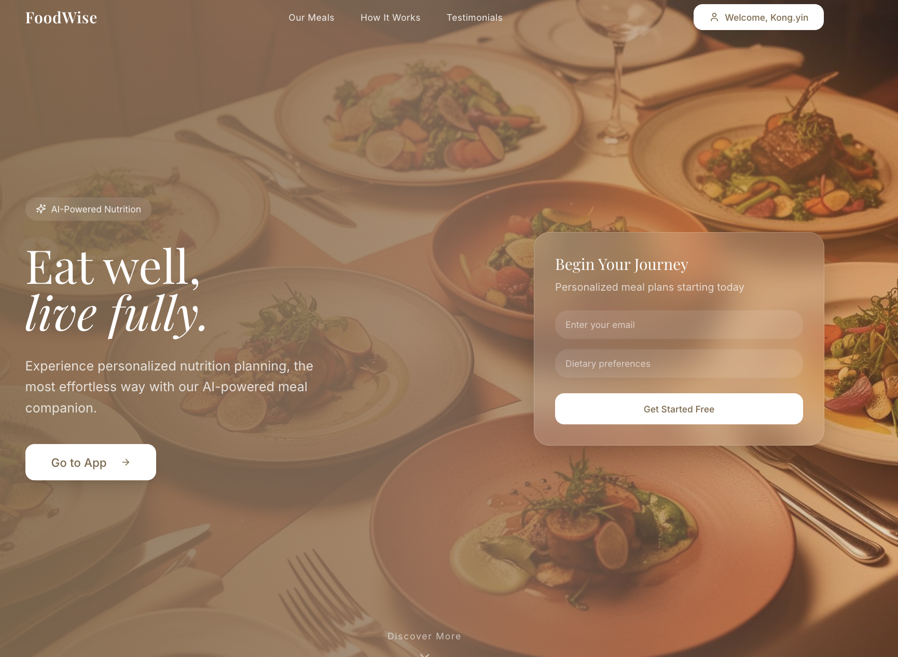
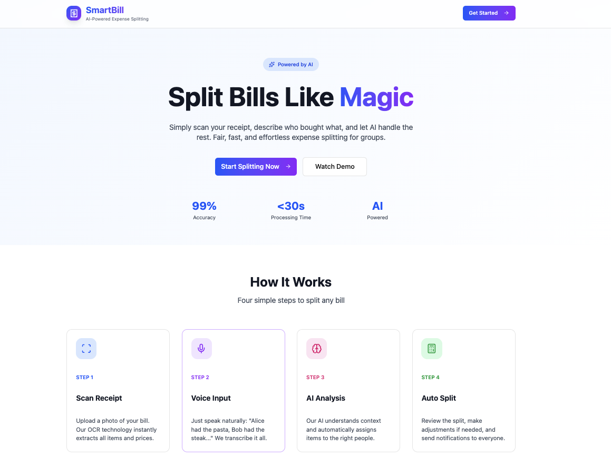

YINGYI KONG
DISCOVER MORE ABOUT ME

FoodWise AI: Intelligent Nutrition Assistant
Navigating dietary needs can be complex. I architected this multi-agent system to make nutrition simple. By orchestrating specialized agents for semantic search and nutritional analysis, FoodWise delivers personalized meal plans —turning raw data into a healthy lifestyle.

SmartBill: Split Expenses Like Magic
Sharing costs shouldn't cost you time. SmartBill leverages OCR and Speech-to-Text technology to digitize receipts instantly. I designed this app to analyze unstructured data and automate the math, making group payments effortless.